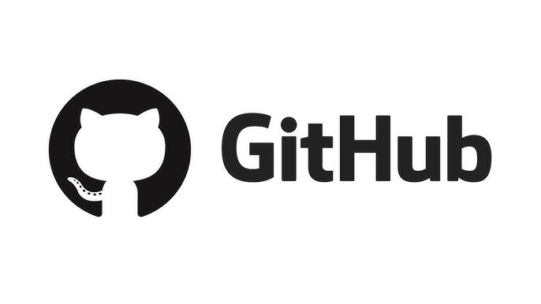
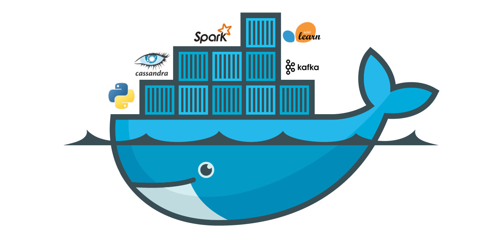
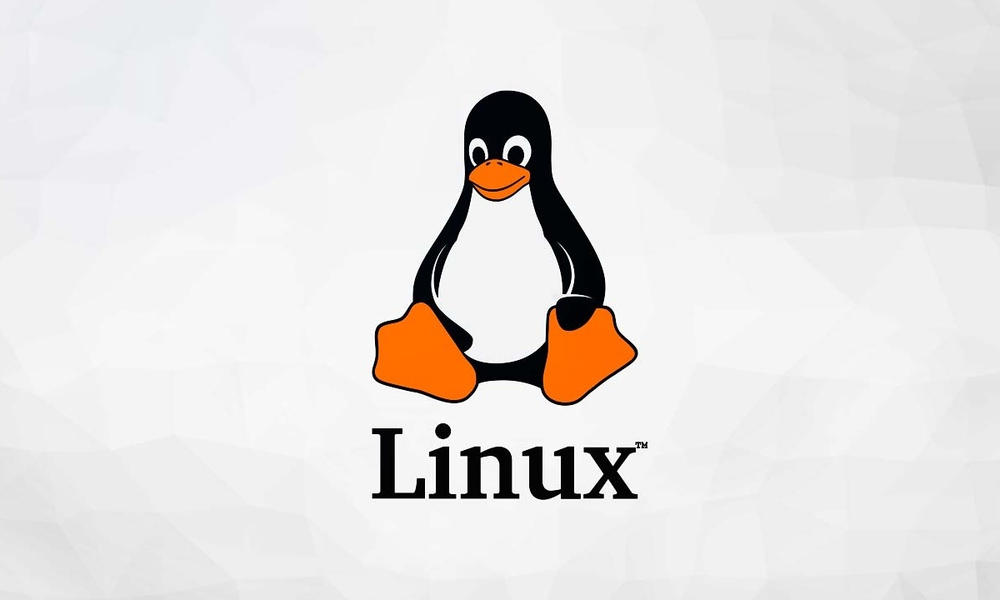

Aprende a gestionar proyectos con GitHub, desde control de versiones hasta trabajo colaborativo en equipo.
Fecha: 5 de abril
Horario: 9:00 a.m. - 12:00 m.

Descubre cómo Docker permite crear entornos de desarrollo portables, seguros y consistentes. Ideal para estudiantes que desean automatizar la configuración de sus proyectos.
Fecha: 6 de abril
Horario: 2:00 p.m. - 3:30 p.m.

Conoce las bases de instalación y configuración de servidores Linux
Fecha: 7 de abril
Horario: 1:00 p.m. - 3:00 p.m.